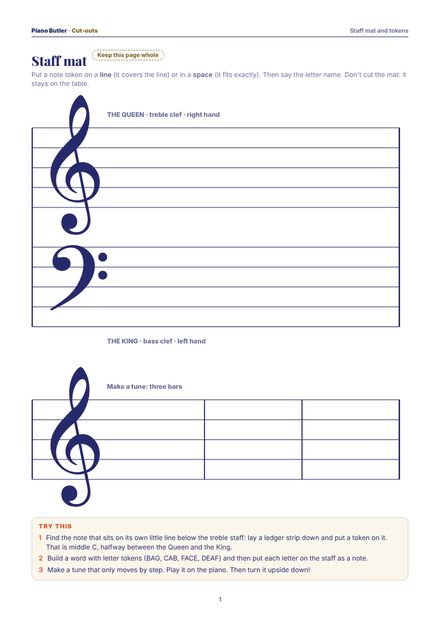
Chapter 4 · Reading the Staff
Staff mat and tokens
A big grand-staff mat with note tokens. Put a token on a line or in a space, say its letter, then spell little words on the staff. Lovely for the first weeks of reading.
Cut-outs, card games and worksheet pages for piano lessons, made by a piano teacher for her own students. Print them on A4, cut them out, and play. Free, with no sign-up.
Paper tools for the lesson table: flashcards, mats, wheels, dice and board games. Most sets go with one chapter of the Piano Butler lessons, from reading the staff to composers and styles.

A big grand-staff mat with note tokens. Put a token on a line or in a space, say its letter, then spell little words on the staff. Lovely for the first weeks of reading.
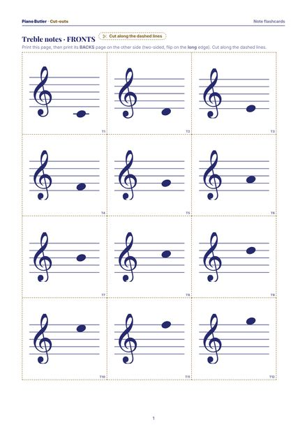
Two-sided flashcards for treble and bass notes. The back shows the letter name and where the note is on the keyboard. Quick-fire reading for the start of a lesson.
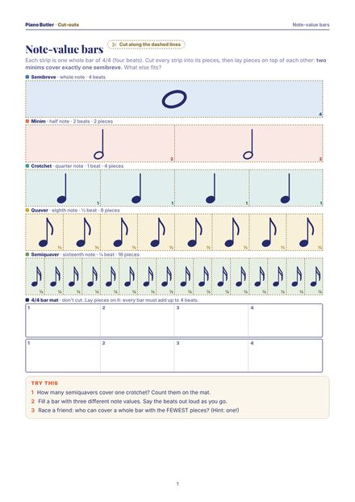
Note-value strips at true scale: one strip is one bar of 4/4. Cut minims, crotchets and quavers apart and fit them back into a bar to see how the beats add up.
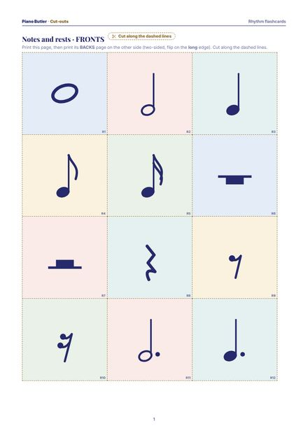
Notes and rests on the front, names and beats on the back. Sort them from longest to shortest, play snap, or clap them.
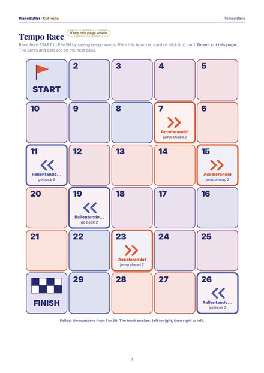
A board game for two to four players. Turn over a tempo word, say what it means, and race your car from START to FINISH.
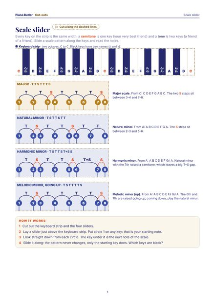
Slide the tone and semitone pattern along a paper keyboard to build any major scale, one key at a time.
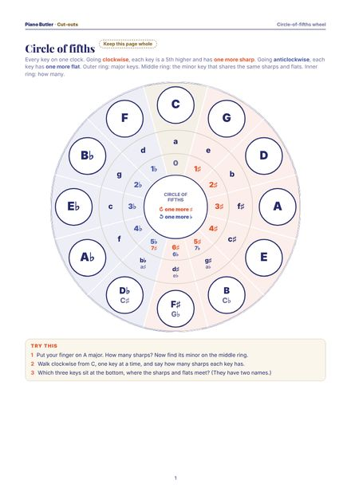
A circle of fifths to keep, with a turning window: put a key in the window to see its neighbours, its relative minor and how many sharps or flats it has.
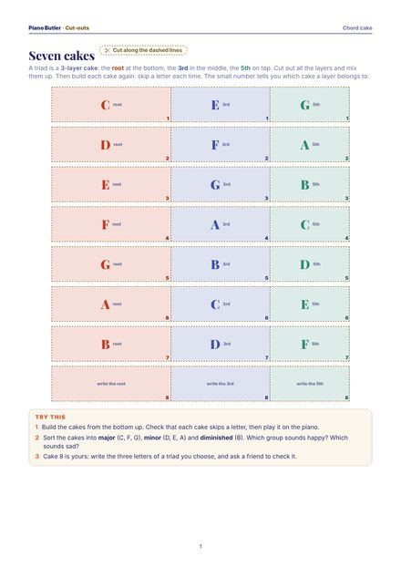
Stack root, 3rd and 5th layers to build triads like a three-layer cake. The second page shows why major and minor 3rds are different sizes.
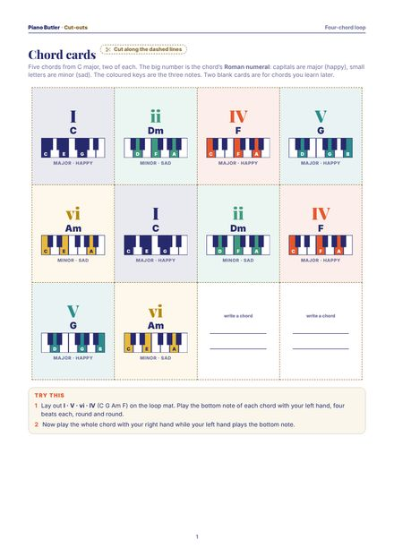
Chord cards for C, Dm, F, G and Am with a loop mat. Lay out four chords, play them round and round, and hum a tune on top -- the way pop songs are made.
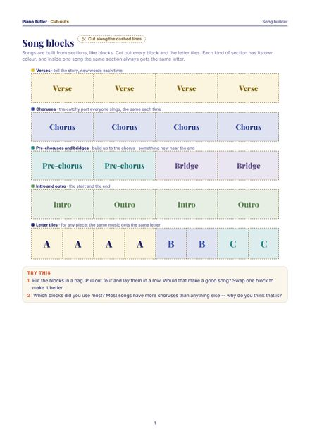
Verse, chorus, pre-chorus and bridge blocks plus A, B and C letter tiles. Lay out the plan of a favourite song, or build a rondo on the song mat.
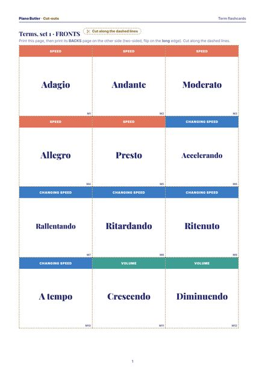
Twenty-four Italian terms on two-sided cards, colour-coded by family: speed, changing speed, volume and other.
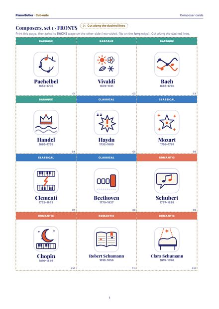
Twenty-four composers from Pachelbel to Hisaishi, with a famous piece and a listen-for clue on the back. Comes with games: Born first!, Time line and Who am I?
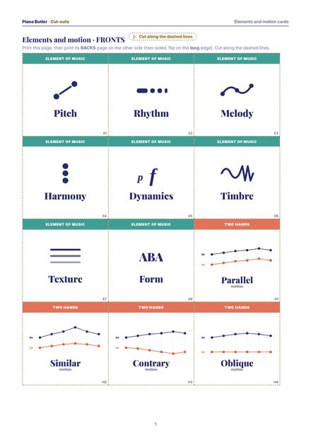
The eight elements of music and the four ways two hands can move, with a listening question on every card and four games to play.
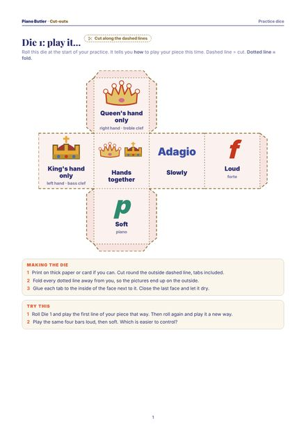
Two fold-up dice that choose how to practise today, plus a weekly practice tracker with star stickers to cut out.
Every page has three parts: something to do together in the lesson, the same idea at home, and a puzzle or game to play. They follow the same path as the lessons, from sitting at the piano to musical styles.
Sitting well, hand shape, the black-key map and every note name.
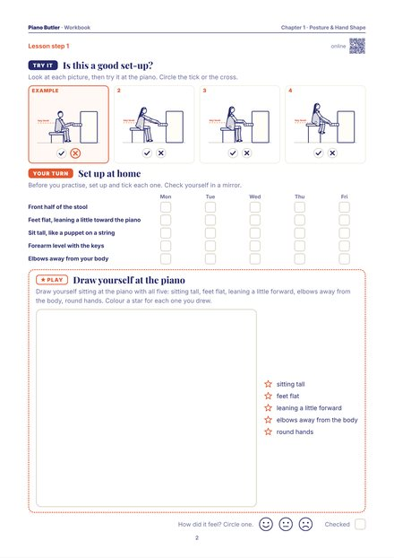
How you sit and how you hold your hands makes every note easier -- and keeps your body happy.
On this page: Is this good sitting? · Sitting and arms · Draw yourself at the piano
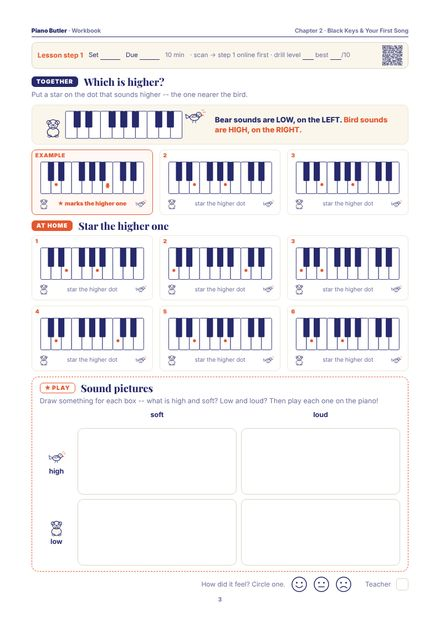
The black keys are a map of the piano -- and your very first song lives on them. You'll also learn to play smoothly: legato.
On this page: Which is higher? · Star the higher one · Sound pictures
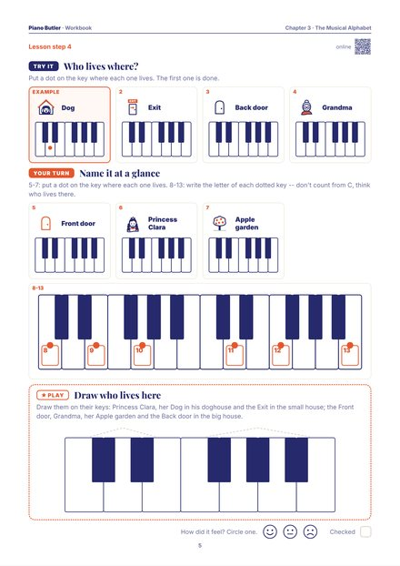
The black keys are your map: groups of 2 and 3 show you where every white key is.
On this page: Find every C and F · Name the dotted keys · Lost letters
The staff, the two clefs, ledger lines, sharps and flats.
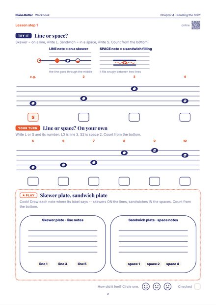
Meet the royal family of the keys: the King sings low, the Queen sings high, and Princess Clara lives on middle C. Lines and spaces first -- kebabs and sandwiches.
On this page: Line or space? · Your turn · Kebab plate, sandwich plate
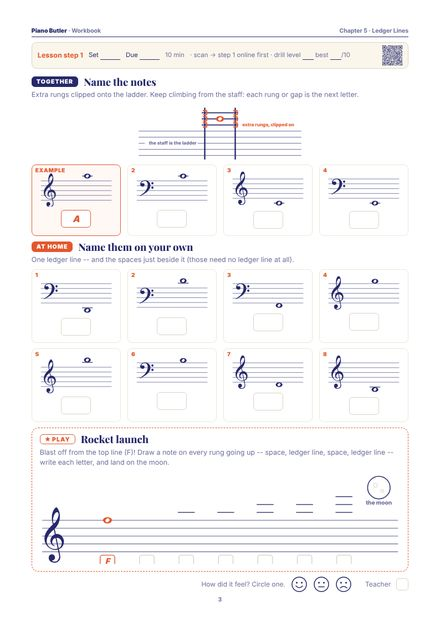
The staff is a ladder. Ledger lines are extra rungs clipped on above and below -- so you can keep climbing: line, space, line, space.
On this page: Name the notes · Name them on your own · Rocket launch
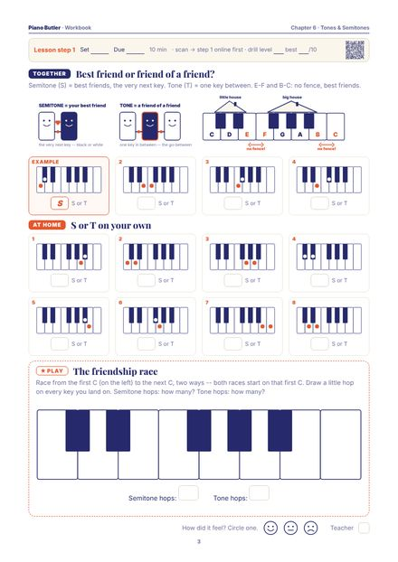
A semitone is your very best friend -- the very next key. A tone is a friend of a friend: one key in between.
On this page: Best friend or friend of a friend? · S or T on your own · The friendship race
A steady beat, note values, time signatures and rhythm patterns.
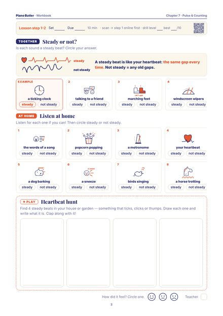
Music has a heartbeat -- the pulse. It keeps going, steady, even when the notes stop.
On this page: Steady or not? · Listen at home · Heartbeat hunt
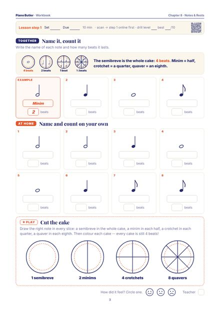
A semibreve is a whole cake: 4 beats. Cut it in half for minims, in quarters for crotchets, in eighths for quavers -- and every note has a rest the same size.
On this page: Name it, count it · Name and count on your own · Cut the cake
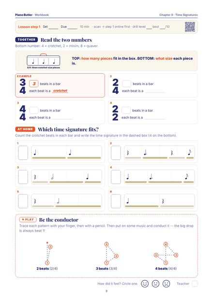
A bar is a lunch box. The top number says how many pieces fit in it; the bottom number says what size each piece is.
On this page: Read the two numbers · Which time signature fits? · Be the conductor
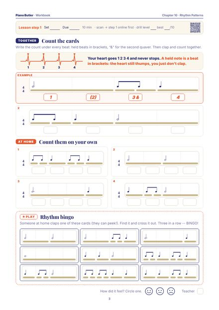
One-bar rhythms in 4/4, easiest first. The beat is your heartbeat -- count it out loud under every note!
On this page: Count the cards · Count them on your own · Rhythm bingo
Pitch and rhythm together, five-finger positions, and speed.
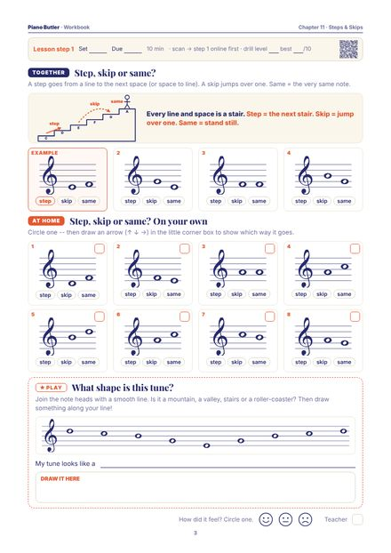
The staff is a staircase: does the next note step up a stair, skip one, or stand still?
On this page: Step, skip or same? · Step, skip or same? On your own · What shape is this tune?
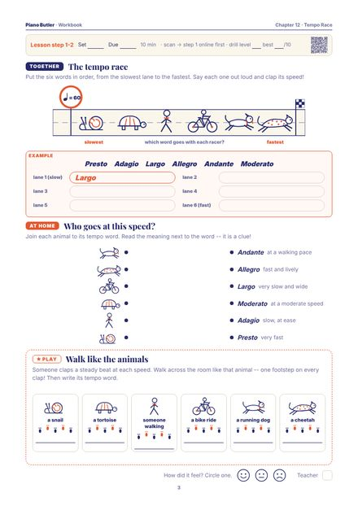
Tempo is how fast the beat goes. Italian words are the speed signs -- from a slow snail to a racing cheetah.
On this page: The tempo race · Who goes at this speed? · Walk like the animals
Intervals, scales and keys, chords -- Preliminary to Grade 3.
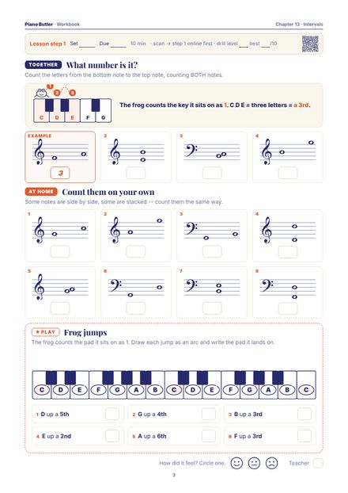
An interval is the distance between two notes. Measure it like a tape measure: count the letters for the number, count the best-friend steps for the quality (major, minor, perfect).
On this page: What number is it? · Count them on your own · Frog jumps
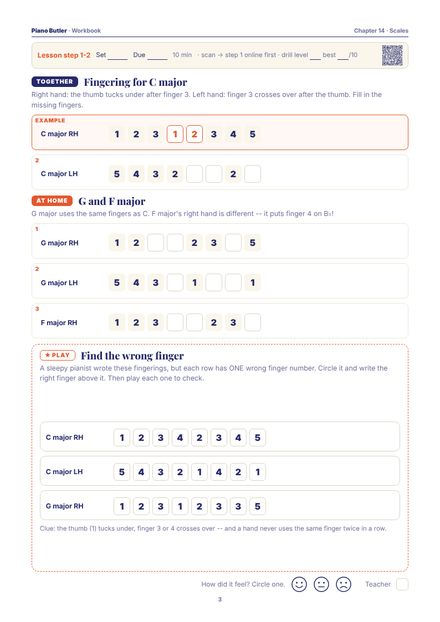
A scale is a staircase. A big step (tone) skips a key, a tiny step (semitone) is the very next key. The same staircase -- T T S T T T S -- builds every major scale.
On this page: Fingering for C major · G and F major · Find the wrong finger
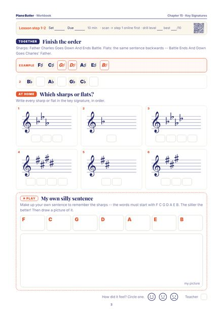
Sharps and flats always join in the same order, like a line-up that never changes. Learn the line and every key falls out of it.
On this page: Finish the order · Which sharps or flats? · My own silly sentence
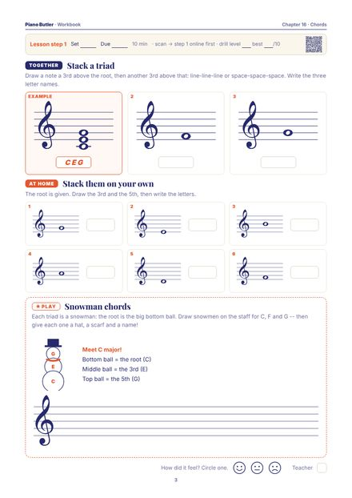
A triad is three notes stacked in 3rds: root, 3rd and 5th. Picture a 3-layer cake or a snowman made of three snowballs -- the notes stack the same way.
On this page: Stack a triad · Stack them on your own · Snowman chords
How tunes and pieces are shaped, loud and soft, signs and Italian terms.
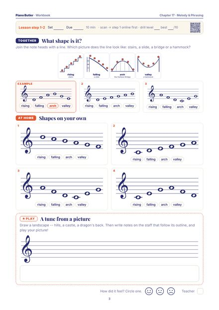
A tune is a journey. It has a shape you can see -- stairs up, a slide down, a bridge, a hammock -- it breathes in phrases, and it asks and answers questions.
On this page: What shape is it? · Shapes on your own · A tune from a picture
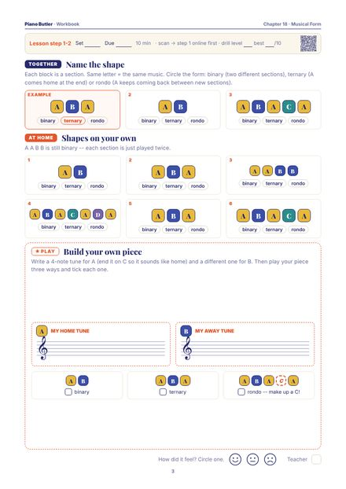
A piece is a train: each section is a carriage. We give each carriage a letter -- the same music keeps its letter, and something new gets the next one.
On this page: Name the shape · Shapes on your own · Build your own piece
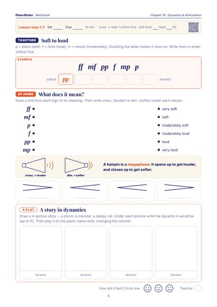
Dynamics are the volume knob: how loud or soft. Articulation is how each note is played -- bouncy, smooth, poked or leaned on.
On this page: Soft to loud · What does it mean? · A story in dynamics
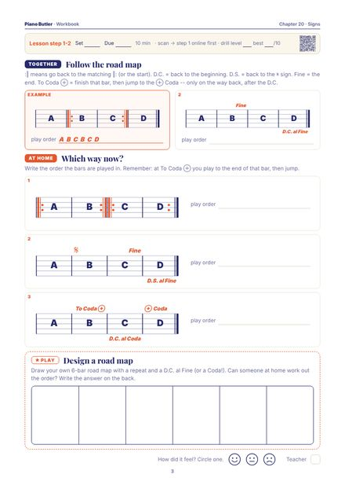
Signs are the music's road signs: go round again, make a U-turn, take the exit, stop at the finish line -- or add a little sparkle.
On this page: Follow the road map · Which way now? · Design a road map
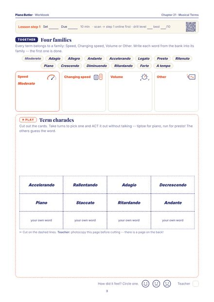
Musical terms are mostly Italian words that tell you how to play: how fast, how loud, and in what style.
On this page: Four families · Term charades
The piano’s story, famous composers and their eras, pitch, styles.
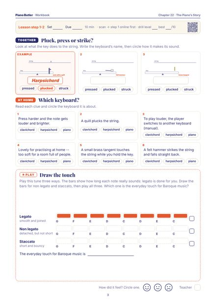
Before the piano there were the clavichord and the harpsichord. Meet the man who invented the piano, look inside it, and find out how each era’s keyboard shaped the way its music is played.
On this page: Pluck, press or strike? · Which keyboard? · Draw the touch
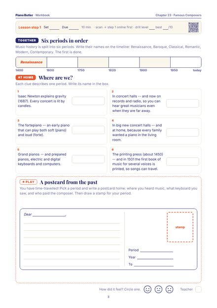
Who wrote the music you play? Travel through six periods of music history, discover the movements inside them, see who was alive at the same time, and get to know each composer’s musical fingerprint.
On this page: Six periods in order · Where are we? · A postcard from the past
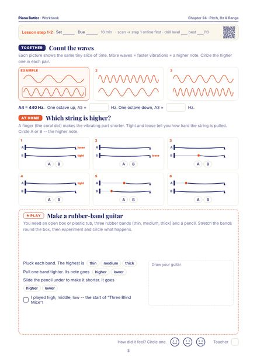
What makes a note high or low? Count vibrations, shorten strings, line up the violin family, climb the octave ladder, and find out where the piano sits among the instruments and voices.
On this page: Count the waves · Which string is higher? · Make a rubber-band guitar
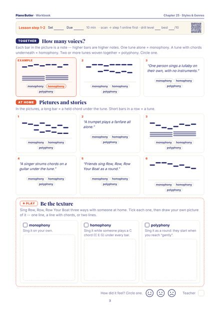
How many tunes are playing at once? When was it written? Is it folk, classical, jazz or pop? Learn to hear -- and see -- what makes each style itself.
On this page: How many voices? · Pictures and stories · Be the texture